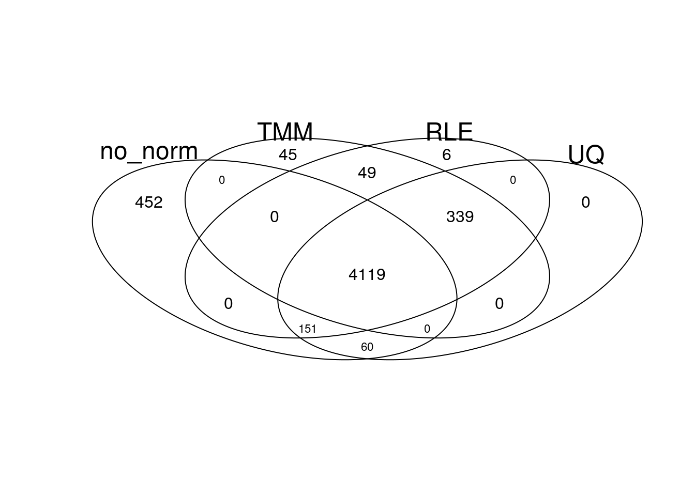
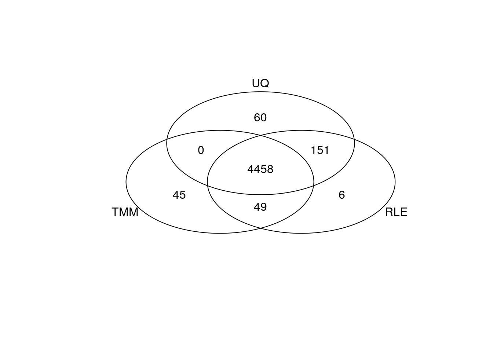

Last updated: 2024-07-31
Checks: 7 0
Knit directory: muse/
This reproducible R Markdown analysis was created with workflowr (version 1.7.1). The Checks tab describes the reproducibility checks that were applied when the results were created. The Past versions tab lists the development history.
Great! Since the R Markdown file has been committed to the Git repository, you know the exact version of the code that produced these results.
Great job! The global environment was empty. Objects defined in the global environment can affect the analysis in your R Markdown file in unknown ways. For reproduciblity it’s best to always run the code in an empty environment.
The command set.seed(20200712) was run prior to running
the code in the R Markdown file. Setting a seed ensures that any results
that rely on randomness, e.g. subsampling or permutations, are
reproducible.
Great job! Recording the operating system, R version, and package versions is critical for reproducibility.
Nice! There were no cached chunks for this analysis, so you can be confident that you successfully produced the results during this run.
Great job! Using relative paths to the files within your workflowr project makes it easier to run your code on other machines.
Great! You are using Git for version control. Tracking code development and connecting the code version to the results is critical for reproducibility.
The results in this page were generated with repository version 566ad8c. See the Past versions tab to see a history of the changes made to the R Markdown and HTML files.
Note that you need to be careful to ensure that all relevant files for
the analysis have been committed to Git prior to generating the results
(you can use wflow_publish or
wflow_git_commit). workflowr only checks the R Markdown
file, but you know if there are other scripts or data files that it
depends on. Below is the status of the Git repository when the results
were generated:
Ignored files:
Ignored: .Rhistory
Ignored: .Rproj.user/
Ignored: r_packages_4.3.3/
Ignored: r_packages_4.4.0/
Note that any generated files, e.g. HTML, png, CSS, etc., are not included in this status report because it is ok for generated content to have uncommitted changes.
These are the previous versions of the repository in which changes were
made to the R Markdown (analysis/edger.Rmd) and HTML
(docs/edger.html) files. If you’ve configured a remote Git
repository (see ?wflow_git_remote), click on the hyperlinks
in the table below to view the files as they were in that past version.
| File | Version | Author | Date | Message |
|---|---|---|---|---|
| Rmd | 566ad8c | Dave Tang | 2024-07-31 | Include analysis |
| html | c34f664 | Dave Tang | 2024-07-29 | Build site. |
| Rmd | 0c10121 | Dave Tang | 2024-07-29 | Normalisation methods using edgeR |
| html | 67bf9ca | Dave Tang | 2023-10-13 | Build site. |
| Rmd | 4bc5f6a | Dave Tang | 2023-10-13 | edgeR normalisation |
Differential expression analysis of RNA-seq expression profiles with biological replication. Implements a range of statistical methodology based on the negative binomial distributions, including empirical Bayes estimation, exact tests, generalized linear models and quasi-likelihood tests. As well as RNA-seq, it be applied to differential signal analysis of other types of genomic data that produce read counts, including ChIP-seq, ATAC-seq, Bisulfite-seq, SAGE and CAGE.
Install using BiocManager::install().
if (!require("BiocManager", quietly = TRUE))
install.packages("BiocManager")
BiocManager::install("edgeR")From ?edgeR::normLibSizes:
Calculate scaling factors to convert the raw library sizes for a set of sequenced samples into normalized effective library sizes.
This function computes scaling factors to convert observed library sizes into normalized library sizes, also called “effective library sizes”. The effective library sizes for use in downstream analysis are lib.size * norm.factors where lib.size contains the original library sizes and norm.factors is the vector of scaling factors computed by this function.
The TMM method implements the trimmed mean of M-values method proposed by Robinson and Oshlack (2010). By default, the M-values are weighted according to inverse variances, as computed by the delta method for logarithms of binomial random variables. If refColumn is unspecified, then the column whose count-per-million upper quartile is closest to the mean upper quartile is set as the reference library.
The TMMwsp method stands for “TMM with singleton pairing”. This is a variant of TMM that is intended to have more stable performance when the counts have a high proportion of zeros. In the TMM method, genes that have zero count in either library are ignored when comparing pairs of libraries. In the TMMwsp method, the positive counts from such genes are reused to increase the number of features by which the libraries are compared. The singleton positive counts are paired up between the libraries in decreasing order of size and then a slightly modified TMM method is applied to the re-ordered libraries. If refColumn is unspecified, then the column with largest sum of square-root counts is used as the reference library.
RLE is the scaling factor method proposed by Anders and Huber (2010). We call it “relative log expression”, as median library is calculated from the geometric mean of all columns and the median ratio of each sample to the median library is taken as the scale factor.
The upperquartile method is the upper-quartile normalization method of Bullard et al (2010), in which the scale factors are calculated from the 75% quantile of the counts for each library, after removing genes that are zero in all libraries. The idea is generalized here to allow normalization by any quantile of the count distributions.
If method=“none”, then the normalization factors are set to 1.
For symmetry, normalization factors are adjusted to multiply to 1. Rows of object that have zero counts for all columns are removed before normalization factors are computed. The number of such rows does not affect the estimated normalization factors.
I created a dataset to test the different normalisation methods. There are four samples; column one and two are the controls and column three and four are the patients. 25 transcripts are in all four samples in equal amount. Another 25 transcripts are only present in the controls and their expression is the same as the first 25 transcripts in the controls. The four samples have exactly the same depth (500 counts). However, since the patient samples have half the number of transcripts than the controls (25 versus 50), they are sequenced at twice the depth. This hypothetical situation was described in Robinson and Oshlack Genome Biology 2010.
control_1 <- rep(10, 50)
control_2 <- rep(10, 50)
patient_1 <- c(rep(20, 25),rep(0,25))
patient_2 <- c(rep(20, 25),rep(0,25))
df <- data.frame(c1=control_1,
c2=control_2,
p1=patient_1,
p2=patient_2)
head(df) c1 c2 p1 p2
1 10 10 20 20
2 10 10 20 20
3 10 10 20 20
4 10 10 20 20
5 10 10 20 20
6 10 10 20 20Tail of the dataset.
tail(df) c1 c2 p1 p2
45 10 10 0 0
46 10 10 0 0
47 10 10 0 0
48 10 10 0 0
49 10 10 0 0
50 10 10 0 0Equal depth.
colSums(df) c1 c2 p1 p2
500 500 500 500 Let’s run the differential expression analysis without any normalisation step:
library(edgeR)Loading required package: limma# create group vector
group <- c('control','control','patient','patient')
# create DGEList object
d <- DGEList(counts=df, group=group)
# check out the DGEList object
dAn object of class "DGEList"
$counts
c1 c2 p1 p2
1 10 10 20 20
2 10 10 20 20
3 10 10 20 20
4 10 10 20 20
5 10 10 20 20
45 more rows ...
$samples
group lib.size norm.factors
c1 control 500 1
c2 control 500 1
p1 patient 500 1
p2 patient 500 1Perform a differential gene expression analysis.
d <- DGEList(counts=df, group=group)
d <- estimateCommonDisp(d)
# perform the DE test
de <- exactTest(d)
# how many differentially expressed transcripts?
table(p.adjust(de$table$PValue, method="BH")<0.05)
TRUE
50 Without normalisation, every transcript is differentially expressed.
From the edgeR manual:
{edgeR} is concerned with differential expression analysis rather than with the quantification of expression levels. It is concerned with relative changes in expression levels between conditions, but not directly with estimating absolute expression levels.
The normLibSizes() function normalises the library sizes
in such a way to minimise the log-fold changes between the samples for
most genes. The default method for computing these scale factors uses a
trimmed mean of M-values (TMM) between each pair of samples. We call the
product of the original library size and the scaling factor the
effective library size, i.e., the normalised library size. The effective
library size replaces the original library size in all downstream
analyses
Let’s test the weighted trimmed mean of M-values method:
d_tmm <- normLibSizes(d, method="TMM")
d_tmmAn object of class "DGEList"
$counts
c1 c2 p1 p2
1 10 10 20 20
2 10 10 20 20
3 10 10 20 20
4 10 10 20 20
5 10 10 20 20
45 more rows ...
$samples
group lib.size norm.factors
c1 control 500 0.7071068
c2 control 500 0.7071068
p1 patient 500 1.4142136
p2 patient 500 1.4142136
$common.dispersion
[1] 0.0001005378
$pseudo.counts
c1 c2 p1 p2
1 10 10 20 20
2 10 10 20 20
3 10 10 20 20
4 10 10 20 20
5 10 10 20 20
45 more rows ...
$pseudo.lib.size
[1] 500
$AveLogCPM
[1] 15.04175 15.04175 15.04175 15.04175 15.04175
45 more elements ...If we use the scaling, we will observe that the differences are now less pronounced.
head(d$counts) c1 c2 p1 p2
1 10 10 20 20
2 10 10 20 20
3 10 10 20 20
4 10 10 20 20
5 10 10 20 20
6 10 10 20 20head(d_tmm$counts * d_tmm$samples$norm.factors) c1 c2 p1 p2
1 7.071068 14.142136 14.14214 28.28427
2 7.071068 14.142136 14.14214 28.28427
3 14.142136 7.071068 28.28427 14.14214
4 14.142136 7.071068 28.28427 14.14214
5 7.071068 14.142136 14.14214 28.28427
6 7.071068 14.142136 14.14214 28.28427Perform the differential expression test.
d_tmm <- estimateCommonDisp(d_tmm)
d_tmm <- exactTest(d_tmm)
table(p.adjust(d_tmm$table$PValue, method="BH")<0.05)
FALSE TRUE
25 25 Only half of the transcripts are differentially expressed (the last 25 transcripts).
Let’s test the relative log expression normalisation method:
d_rle <- normLibSizes(d, method="RLE")
d_rleAn object of class "DGEList"
$counts
c1 c2 p1 p2
1 10 10 20 20
2 10 10 20 20
3 10 10 20 20
4 10 10 20 20
5 10 10 20 20
45 more rows ...
$samples
group lib.size norm.factors
c1 control 500 0.7071068
c2 control 500 0.7071068
p1 patient 500 1.4142136
p2 patient 500 1.4142136
$common.dispersion
[1] 0.0001005378
$pseudo.counts
c1 c2 p1 p2
1 10 10 20 20
2 10 10 20 20
3 10 10 20 20
4 10 10 20 20
5 10 10 20 20
45 more rows ...
$pseudo.lib.size
[1] 500
$AveLogCPM
[1] 15.04175 15.04175 15.04175 15.04175 15.04175
45 more elements ...Perform the differential gene expression analysis.
d_rle <- estimateCommonDisp(d_rle)
d_rle <- exactTest(d_rle)
table(p.adjust(d_rle$table$PValue, method="BH")<0.05)
FALSE TRUE
25 25 Lastly let’s try the upper-quartile normalisation method:
d_uq <- normLibSizes(d, method="upperquartile")
d_uqAn object of class "DGEList"
$counts
c1 c2 p1 p2
1 10 10 20 20
2 10 10 20 20
3 10 10 20 20
4 10 10 20 20
5 10 10 20 20
45 more rows ...
$samples
group lib.size norm.factors
c1 control 500 0.7071068
c2 control 500 0.7071068
p1 patient 500 1.4142136
p2 patient 500 1.4142136
$common.dispersion
[1] 0.0001005378
$pseudo.counts
c1 c2 p1 p2
1 10 10 20 20
2 10 10 20 20
3 10 10 20 20
4 10 10 20 20
5 10 10 20 20
45 more rows ...
$pseudo.lib.size
[1] 500
$AveLogCPM
[1] 15.04175 15.04175 15.04175 15.04175 15.04175
45 more elements ...DE test.
d_uq <- estimateCommonDisp(d_uq)
d_uq <- exactTest(d_uq)
table(p.adjust(d_uq$table$PValue, method="BH")<0.05)
FALSE TRUE
25 25 Perform differential gene expression analysis using various normalisation methods on the pnas_expression.txt dataset.
my_url <- "https://davetang.org/file/pnas_expression.txt"
data <- read.table(my_url, header=TRUE, sep="\t")
dim(data)[1] 37435 9Prepare a DGEList object.
d <- data[,2:8]
rownames(d) <- data[,1]
group <- c(rep("Control",4),rep("DHT",3))
d <- DGEList(counts = d, group=group)Filter out lowly expressed genes.
keep <- rowSums(cpm(d) > 0.5) >= 2
d <- d[keep, , keep.lib.sizes=FALSE]Carry out differential gene expression analysis with no normalisation.
no_norm <- estimateCommonDisp(d)
no_norm <- exactTest(no_norm)
table(p.adjust(no_norm$table$PValue, method="BH")<0.05)
FALSE TRUE
14683 4782 With TMM normalisation.
TMM <- normLibSizes(d, method="TMM")
TMMAn object of class "DGEList"
$counts
lane1 lane2 lane3 lane4 lane5 lane6 lane8
ENSG00000124208 478 619 628 744 483 716 240
ENSG00000182463 27 20 27 26 48 55 24
ENSG00000124201 180 218 293 275 373 301 88
ENSG00000124205 0 0 5 5 0 0 0
ENSG00000124207 76 80 85 97 80 81 37
19460 more rows ...
$samples
group lib.size norm.factors
lane1 Control 978233 1.0327868
lane2 Control 1156431 1.0371519
lane3 Control 1441598 1.0278995
lane4 Control 1484958 1.0294240
lane5 DHT 1822854 0.9366119
lane6 DHT 1833704 0.9340634
lane8 DHT 681509 1.0084769TMM <- estimateCommonDisp(TMM)
TMM <- exactTest(TMM)
table(p.adjust(TMM$table$PValue, method="BH")<0.05)
FALSE TRUE
14913 4552 With RLE.
RLE <- normLibSizes(d, method="RLE")
RLEAn object of class "DGEList"
$counts
lane1 lane2 lane3 lane4 lane5 lane6 lane8
ENSG00000124208 478 619 628 744 483 716 240
ENSG00000182463 27 20 27 26 48 55 24
ENSG00000124201 180 218 293 275 373 301 88
ENSG00000124205 0 0 5 5 0 0 0
ENSG00000124207 76 80 85 97 80 81 37
19460 more rows ...
$samples
group lib.size norm.factors
lane1 Control 978233 1.0149859
lane2 Control 1156431 1.0236589
lane3 Control 1441598 1.0345742
lane4 Control 1484958 1.0400447
lane5 DHT 1822854 0.9706371
lane6 DHT 1833704 0.9734747
lane8 DHT 681509 0.9466503RLE <- estimateCommonDisp(RLE)
RLE <- exactTest(RLE)
table(p.adjust(RLE$table$PValue, method="BH")<0.05)
FALSE TRUE
14801 4664 With the upper quartile method.
uq <- normLibSizes(d, method="upperquartile")
uqAn object of class "DGEList"
$counts
lane1 lane2 lane3 lane4 lane5 lane6 lane8
ENSG00000124208 478 619 628 744 483 716 240
ENSG00000182463 27 20 27 26 48 55 24
ENSG00000124201 180 218 293 275 373 301 88
ENSG00000124205 0 0 5 5 0 0 0
ENSG00000124207 76 80 85 97 80 81 37
19460 more rows ...
$samples
group lib.size norm.factors
lane1 Control 978233 1.0110884
lane2 Control 1156431 1.0263441
lane3 Control 1441598 1.0291497
lane4 Control 1484958 1.0324023
lane5 DHT 1822854 0.9766795
lane6 DHT 1833704 0.9843852
lane8 DHT 681509 0.9433508uq <- estimateCommonDisp(uq)
uq <- exactTest(uq)
table(p.adjust(uq$table$PValue, method="BH")<0.05)
FALSE TRUE
14796 4669 Finding the overlaps between the differential gene expression analyses.
library(gplots)
Attaching package: 'gplots'The following object is masked from 'package:stats':
lowessget_de <- function(x, pvalue){
my_i <- p.adjust(x$PValue, method="BH") < pvalue
row.names(x)[my_i]
}
my_de_no_norm <- get_de(no_norm$table, 0.05)
my_de_tmm <- get_de(TMM$table, 0.05)
my_de_rle <- get_de(RLE$table, 0.05)
my_de_uq <- get_de(uq$table, 0.05)
gplots::venn(list(no_norm = my_de_no_norm, TMM = my_de_tmm, RLE = my_de_rle, UQ = my_de_uq))
There is a large overlap of differentially expressed genes in the different normalisation approaches.
gplots::venn(list(TMM = my_de_tmm, RLE = my_de_rle, UQ = my_de_uq))
The normalisation factors were quite similar between all normalisation methods, which is why the results of the differential expression were quite concordant. Most methods down sized the DHT samples with a normalisation factor of less than one to account for the larger library sizes of these samples.
sessionInfo()R version 4.4.0 (2024-04-24)
Platform: x86_64-pc-linux-gnu
Running under: Ubuntu 22.04.4 LTS
Matrix products: default
BLAS: /usr/lib/x86_64-linux-gnu/openblas-pthread/libblas.so.3
LAPACK: /usr/lib/x86_64-linux-gnu/openblas-pthread/libopenblasp-r0.3.20.so; LAPACK version 3.10.0
locale:
[1] LC_CTYPE=en_US.UTF-8 LC_NUMERIC=C
[3] LC_TIME=en_US.UTF-8 LC_COLLATE=en_US.UTF-8
[5] LC_MONETARY=en_US.UTF-8 LC_MESSAGES=en_US.UTF-8
[7] LC_PAPER=en_US.UTF-8 LC_NAME=C
[9] LC_ADDRESS=C LC_TELEPHONE=C
[11] LC_MEASUREMENT=en_US.UTF-8 LC_IDENTIFICATION=C
time zone: Etc/UTC
tzcode source: system (glibc)
attached base packages:
[1] stats graphics grDevices utils datasets methods base
other attached packages:
[1] gplots_3.1.3.1 edgeR_4.2.1 limma_3.60.4 lubridate_1.9.3
[5] forcats_1.0.0 stringr_1.5.1 dplyr_1.1.4 purrr_1.0.2
[9] readr_2.1.5 tidyr_1.3.1 tibble_3.2.1 ggplot2_3.5.1
[13] tidyverse_2.0.0 workflowr_1.7.1
loaded via a namespace (and not attached):
[1] gtable_0.3.5 xfun_0.44 bslib_0.7.0 caTools_1.18.2
[5] processx_3.8.4 lattice_0.22-6 callr_3.7.6 tzdb_0.4.0
[9] vctrs_0.6.5 tools_4.4.0 ps_1.7.6 bitops_1.0-7
[13] generics_0.1.3 fansi_1.0.6 highr_0.11 pkgconfig_2.0.3
[17] KernSmooth_2.23-22 lifecycle_1.0.4 compiler_4.4.0 git2r_0.33.0
[21] statmod_1.5.0 munsell_0.5.1 getPass_0.2-4 httpuv_1.6.15
[25] htmltools_0.5.8.1 sass_0.4.9 yaml_2.3.8 later_1.3.2
[29] pillar_1.9.0 jquerylib_0.1.4 whisker_0.4.1 cachem_1.1.0
[33] gtools_3.9.5 tidyselect_1.2.1 locfit_1.5-9.9 digest_0.6.35
[37] stringi_1.8.4 rprojroot_2.0.4 fastmap_1.2.0 grid_4.4.0
[41] colorspace_2.1-0 cli_3.6.2 magrittr_2.0.3 utf8_1.2.4
[45] withr_3.0.0 scales_1.3.0 promises_1.3.0 timechange_0.3.0
[49] rmarkdown_2.27 httr_1.4.7 hms_1.1.3 evaluate_0.24.0
[53] knitr_1.47 rlang_1.1.4 Rcpp_1.0.12 glue_1.7.0
[57] rstudioapi_0.16.0 jsonlite_1.8.8 R6_2.5.1 fs_1.6.4